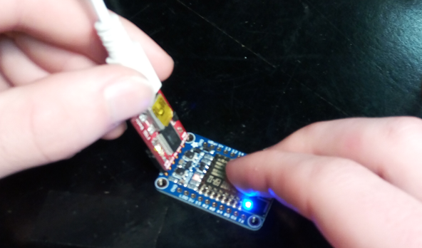

Avec ce guide explicatif, vous allez être en mesure de répliquer notre projet et d'utiliser notre code source facilement.
Nous optons pour une mentalité Open-source. Vous pouvez modifier le code source et améliorer le projet comme bon vous semble!
L'ampoule et son circuit
Préparation à la fabrication
Avant de procéder à la fabrication, il sera bien important de vous assurer que vous avez tous les composants du circuit en main. En premier lieu vous allez avoir besoin d’une dizaine de fils conducteurs afin d’établir le contact entre les composants du circuit.
Ensuite, une alimentation à découpage sera nécessaire afin d’alimenter votre circuit. Ce composant doit être d’une taille minimale afin d’optimiser l’espace disponible dans l’ampoule, doit pouvoir exercer une tension minimale de 5volt et un courant de 1ampere. Nous avons alors choisi le bloc d’alimentation d’Apple de 1w, car il a toutes les caractéristiques nécessaires. Vous aurez aussi besoin d’une prise USB male pour le connecter au chargeur.
Un microcontrôleur sera nécessaire à la gestion des opérations de votre circuit. Ce microcontrôleur doit avoir un minimum de 3 sorties analogues, un transmetteur WiFi intégré afin de permettre les échanges d’information avec votre réseau internet, une taille minimale afin d’optimiser l’espace disponible dans l’ampoule. Le microcontrôleur choisi est l’ESP8266, car il possède toutes ces caractéristiques.
Afin de fournir un éclairage puissant, économe d’énergie et de couleur variante, vous aller avoir besoin de trois lumières DEL, car chacune de ces lumières aura une couleur différent afin de pour faire des mélanges et d’obtenir n’importe quelle couleur. Nous avons choisi une plaquette DEL de la marque Cree XLamp et du modèle XM-L, car elle possède une grande puissance et elles ont toutes les caractéristiques requises.
L’ampoule D.E.L. ne fait pas partie du circuit, mais elle améliore l’esthétique de projet et elle sert de contenant. Cette Ampoule doit seulement être faite de plastique afin de faciliter le démontage et de taille standard.
Pour compléter cette liste de composante essentielle à la construction de votre circuit, vous allez devoir y ajouter des transistors. Cette composante est essentielle afin d’amplifier le signal provenant du microcontrôleur, alors vous aurez besoin de trois transistors pour chaque DEL de couleur différente. Chaque DEL consomme un courant de 350milliampere, alors chaque transistor doit pouvoir être dans la possibilité de passer cette quantité de courant sans qu’il surchauffe et doit pouvoir résister à une tension de 5volt. Nous avons donc choisi les transistors p2n2222a, car elles peuvent supporter un courant de plus de 600miliampere et une tension de 40v au maximum. Pour limiter le passage du courant à la base des transistors, l’utilisation de résistance sera requise. Vous aurez donc besoin de trois résistances de 300ohm.
La préparation à la fabrication requiert aussi d’avoir en sa possession le bon outil. Vous allez avoir besoin d’un dénudeur de fils pour faciliter les connexions, un fusil a colle chaude pour fixer et isoler les composantes, un soudeur a Étain pour solidifier et établir une conductibilité entre les composantes.
Construction de l’ampoule
Schéma de l’ampoule
Dans ce schéma ci-haut, les composantes représenter par T1,T2 et T3 sont des transistors et les composantes représenter par R1,R2 et R3 sont des résistances.
1-Dénuder chacune des extrémités des fils que vous avez.
2-souder un fils de D2 à R3, de R3 à T1, de T1 à P+ et de T1 à B.
3-Souder un fils de D4 à R1, de R1 à T3, de T3 à P+ et de T3 à R.
4-Souder un fils de D5 à R2, de R2 à T2, de T2 à P+ et de T2 à G.
5-Souder un fil de P- aux DEL R,G,B et au GND.
6-Décoller le haut de l’ampoule
7-Souder les connexions A1 à B1 et A2 à B2.
8-Coller l’alimentation à découpage au fond de l’ampoule et ajouter sur le dessus le esp8266 et le circuit électrique. Ajouter ensuite la plaquette de lumières DEL sur le dessus, assurez-vous qu’il n’y a rien qui obstrue le passage de la lumière, car cela pourrait provoquer des ombres. Refermer ensuite le haut de l’ampoule et tester votre projet.
Partie logiciel
Dans cette partie, nous allons expliquer en premier lieu comment récupérer notre code source.
Par la suite, nous allons expliquer comment programmer le micro-contrôleur pour votre réseau,
comment mettre en marche le serveur et comment lancer l'application web qui permettra de contrôler l'ampoule.
Téléchargement de notre code source
Notre code source est entièrement libre d'accès. Pour récupérer la dernière version à jour, veuillez suivre ce lien GitHub:
Pour la suite du guide, j'utiliserai la version Windows de Git. Il vous ait possible de récupérer le code source de notre
projet en téléchargeant l'archive .zip qui est disponible sur la page GitHub du projet, et ainsi sauter l'installation de Git.
Cependant, la console (Bash) qui vient avec l'installation de Git sera utilisée dans toutes les étapes, et est supérieure à la ligne de commandes Windows par défaut.
Je vous recommande donc fortement de procéder à l'installation de Git.
Vous pouvez télécharger Git pour Windows en cliquant ici.
Je vous conseille de garder cocher l'option d'installation "Add Git Bash Here to windows context menu".
Une fois Git installé sur votre ordinateur, vous pouvez facilement clôner le projet depuis GitHub.
Ouvrez Git Shell nouvellement installé sur votre ordinateur. Rendez-vous dans le dossier dans lequel vous voulez récupérer le code source.
Vous pouvez également ouvrir Git Shell depuis l'explorateur Windows en effectuant un clic droit avec l'option "Git Bash Here".
Cette commande placera la console dans le dossier spécifié.
Pas besoin d'utiliser les commandes cd pour se déplacer dans le bon dossier.
Vous devrez maintenant avoir une fenêtre de la sorte:
Pour télécharger notre code source, utilisez la commande suivante:
Veuillez patienter, le téléchargement peux prendre plusieurs minutes.
Préparation et démarrage du serveur
Pour lancer notre serveur, vous allez avoir besoin d'installer Node.JS ainsi que du Node Package Manager (NPM).
Vous pouvez installer Node.JS en cliquant sur l'icone suivante:
Une fois NodeJS installé, dirigez vous dans le sous-dossier "Server" du dossier "Smarty-Light" récemment télécharger.
Ouvrez ensuite une nouvelle fenêtre Git Bash à l'intérieur de ce dossier.
Vous aurez besoin de l'adresse ip de votre ordinateur sur le réseau local dans les étapes futures.
Pour la connaître, entrez la commande suivante dans l'interface de commandes Git Bash:
ipconfig
Vous devrez ensuite cibler votre adaptateur réseau et noter l'adresse IPv4 qui lui est assigné sur votre réseau local.
Récupération de l'adresse IP du serveur
Maintenant que nous connaissons l'adresse ip du serveur, nous pouvons lancer le serveur.
Pour se faire, lancer la commande suivante:
node server.js
Si tout s'est déroulé comme prévu, vous devriez obtenir une fenêtre de la sorte:
Serveur démarré
Il se peut que vous obteniez l'erreur suivante lors du démarrage du serveur:
Erreur lors du démarrage du serveur - Port utilisé
Cette erreur signifie que le port du serveur (3000 par défaut) est déjà utilisé par un autre processus.
Si c'est le cas, vérifiez que vous n'avez pas une autre instance du serveur en cours ou une application qui utilise le même port.
Advenant le cas où il vous ait impossible de libérer le port 3000, vous pouvez le changer dans le fichier Server.js et utiliser un autre port.
Préparation et téléversement du code vers le ESP8266
Avant de procéder au téléversement du code vers le ESP8266 et ainsi le programmer pour l'interraction avec le serveur,
il faudra modifier quelques lignes dans le code source.
Ouvrez le fichier "ESP8266_Smarty-light.ino" se trouvant dans le sous-dossier "ESP8266_Smarty-light" du dossier principal "smarty-light".
Une fois dans le fichier, modifiez le contenu de la variable "ssid" par le nom du réseau wi-fi.
Remplacez également le contenu de la variable "password" par le mot de passe du réseau wi-fi.
//Variables Wifi
const char* ssid = "======Changez pour votre nom de réseau Wifi======";
const char* password = "======Changez pour votre mot de passe Wifi======";
Par exemple, si mon réseua Wifi se nomme "WiFi-Ninja" et que le mot de passe est "12345", je devrais avoir le code suivant:
Vous devrez ensuite ajuster l'adresse IP et le port du serveur avec l'adresse IP qui a été notée précédemment dans les champs suivants:
//Variables Socket.IO
const char* host = "192.168.1.100";// Remplacez par votre valeur
const int port = 3000; //Remplacez par le port du Serveur API. 3000 est la valeur par défaut.
Le code source est maintenant prêt à être téléversé sur le ESP8266.
Vous devez au préalable avoir installé Arduino IDE ainsi que la bibliothèque du ESP8266 pour l'utiliser.

Téléversement du programme dans le esp8266
Afin de téléverser le programme, vous devez connecter le module communication USB avec le esp8266 et votre ordinateur. Lorsque la connexion est établie, vous devez appuyer et maintenir le bouton de gauche (GPI0) et ensuite appuyer sur le bouton de droite (RESET). Si la lumière bleue s'éteint, alors le esp8266 est prêt au téléversement. Si la lumière bleue est toujours visible, vous devez recommencer le processus.
Lorsque le esp8266 est connecté, vous pouvez téléverser le programme sur le esp8266 à l'aide de l'environnement de développement de Arduino. Cette étape peut prendre quelques minutes. Lorsque le logiciel indique que le téléversement est terminé, vous pouvez déconnecter le esp8266 du module USB.
Démarrage de l'application web
Pour démarrer l'application web, vous devez vous dirigez dans le sous-dossier "WebApp" du dossier principal "Smarty-light". Une fois à l'intérieur, ouvrez un terminal Git Bash.
Entrez la commande suivante afin de vous assurez d'avoir tous les modules installés:
npm install
Pour démarrer l'application, entrez la commande suivante:
npm start
Attention..
Assurez-vous d'avoir bien démarré le serveur avant de procéder au démarrage de l'application Web. Dans le cas échéant, vous obtiendrez une erreur de port en utilisation en démarrant le serveur, puisque l'application web utilise le port 3000 par défaut.
Démarrage de l'application web
Une fois la commande lancée, le serveur web démarrera et votre navigateur web par défaut devrait s'ouvrir avec l'application web.
Si elle ne s'ouvre pas automatiquement, naviguez à l'url "localhost:3001".
Application web démarrée avec succès!
Émulation d'une ampoule pour tester l'application et le serveur
Afin de tester l'application avant d'avoir réalisé l'ampoule, nous avons mis en place une application qui émule la connexion d'une ampoule.
Avec cet émulateur, il est possible de simuler comment réagirait l'application avec un bon nombre d'ampoules.
Pour simuler une ampoule, rendez-vous dans le sous-dossier "Client" du dossier principal "Smarty-light" et démarrez un terminal Git Bash.
Entrez la commande suivante pour démarrer le client, qui simulera l'interraction d'une ampoule avec le serveur:
node client.js
Si le serveur est bien démarré, vous devriez voir le client s'y connecter.
Connexion du client avec le serveur
Vous devriez maintenant voir l'ampoule simulée via l'application web.
Connexion du client avec le serveurInterraction de l'ampoule simulée avec l'application web